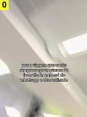

@raulrabaca · 130 mil seg. · 2024-11-06
pov a viagem que vocês sempre se prometeram de fazer finalmente saiu do whatsapp e virou realidade
195 mil views · 26 mil curt. · 132 coment. · 5 mil compart. · 2 mil salvos
"saiu do whatsapp": todo grupo tem uma viagem que nunca sai; o texto é a piada